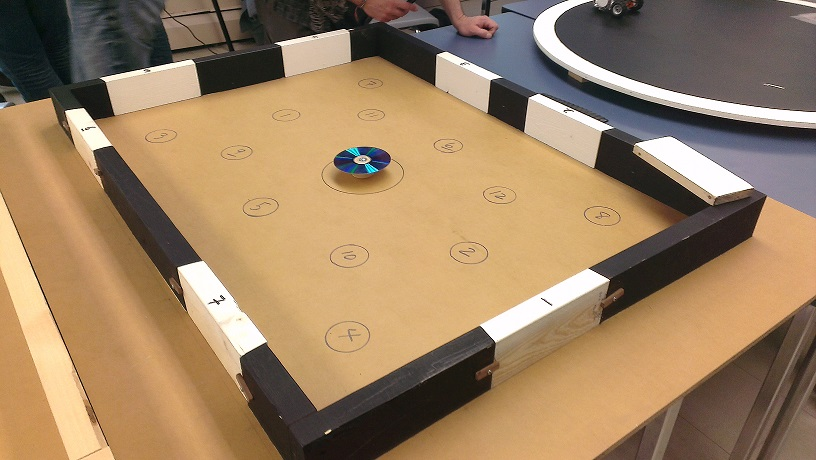

Immediately after the final exams, the semester was not over yet. There was a 5 week projects course that took place. The projects course was an introduction to project management.The project was to build and program a Lego Mindstorms NXT robot to perform various tasks in different challenges. The robot was programmed in Java using the Lejos API.
To make this project course more difficult, there were limited access to resources. The challenge tables were only available during open lab times and each lab time had 5 different teams so we had to share the tables. Also the number of Lego pieces to construct the robot was restricting making it more difficult to have the specific pieces needed.
There were 3 challenges in total each with a specific goal and a different build of the robot. The robot had to be slightly adjusted for each situation. We were the first team to complete all 3 challenges by planning our strategies carefully.
The first challenge was simple, a maze. The robot was to travel through a maze and reach past the end line. The robot has attached a ultra sonic sensor allowing it to determine a specific distance before turning left or right.
The First Challenge
The second challenge was a little bit more complicated which required more programming. The robot was placed on a random location in a room. The room has a black wall and 7 white doors where only one random door would be unlocked. The robot was programmed to scan all white doors in the room and push through. The robot travels along the black wall until it hits a colour change on the wall. Then it turns rights to face the door and attempts to open. If the door would not open then it will turn left and travel along the wall until another wall colour change occurs. The robot has attached an ultra sonic sensor to detect the closest wall and a light sensor to detect colour change between the walls.
A picture of how the room looks like
The Second Challenge
The third challenge was a battle between our robot and 2 deadly fully customized robots. The 2 fully customized robots were built by 2 different instructors. The customized robots has unlimited resources as compared to our robot which has limited resources. In this challenge we had to battle and win 2 out of 3 rounds in a circular platform. Using a multi threaded algorithm we were able to complete this challenge.
Demonstration of the seek and destroy algorithm
Demonstration of the platform algorithm
The Final Challenge